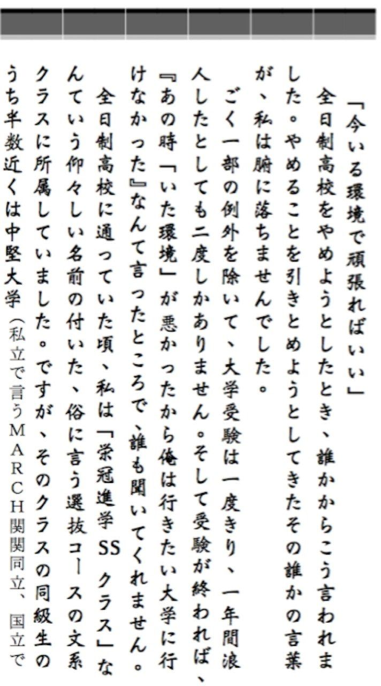
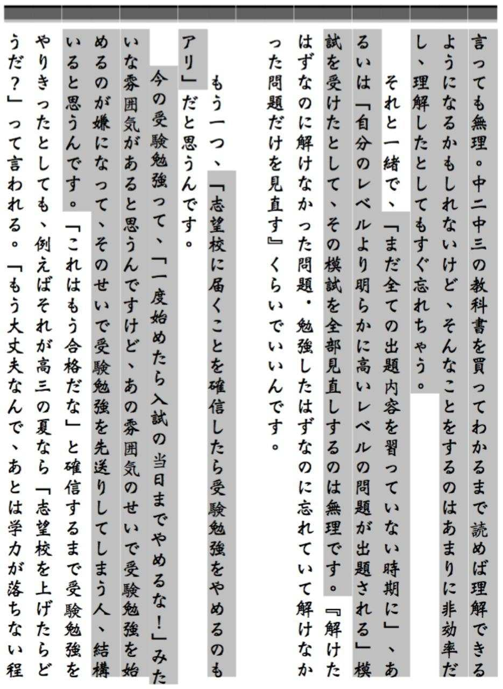
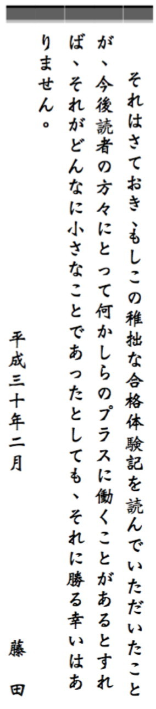

| 高校やめたら早稲田受かった | |
| 合格体験編集会 | |
| pubfull (2017) | |
序章 エピソード ： 「真面目」をやめた中学時代 （紙媒体のみ掲載）
○「自称進学校」と宿題の山 （紙媒体のみ掲載）
○いらない科目はやらない科目 （紙媒体のみ掲載）
●英語・国語の勉強方法 （紙媒体のみ掲載）
○あとは早稲田を目指すだけ （紙媒体のみ掲載）
○日本史は手抜きを許してくれない （紙媒体のみ掲載）
●日本史の勉強方法 （紙媒体のみ掲載）
○精神衛生と「ニヤニヤ」くん （紙媒体のみ掲載）
○でも、やっぱり諦めモード （紙媒体のみ掲載）
【重要】
○大学生のツイッターに惑わされるな！ （紙媒体のみ掲載）
○ネット掲示板の「学歴板」に惑わされるな！ （紙媒体のみ掲載）
「スクールハラスメント」
という言葉を知っていますか？
「スクールハラスメント」とは、教育現場において、職権を乱用した教員によって行われるパワーハラスメント・セクシャルハラスメント・モラルハラスメントなどを総称した言葉です。
教員が生徒に体罰を行ったり、いじめに加担したり・・・
このようなスクールハラスメント問題は、現在メディアでクローズアップされ、社会問題の一つとなっています。
しかし、実はもう一つ、世間であまり認知されていない重大な問題があります。
高校教員が自らの価値観や高校の都合のために、
生徒の望まない進路を強要している
という問題です。
地方出身の大学生の多くは、このような現状があることを知っています。
自らがこの問題に直面し、それを乗り越えて大学合格を勝ち取っているからです。あるいは、この問題のために自らの望まない大学・学部に通わざるを得なかった人も少なくありません。
しかし、誰もが「仕方のないこと」だと諦めてしまっているためか、この現状は問題提起されることすらもほとんどありません。
進路決定は生徒の人生を大きく左右します。
そんな人生のかかった進路決定が、偏りのある進路指導や高校教員からの恫喝や言い包め などの圧力によって本人の望まない形にされてしまうなど、絶対にあってはならないはずです。
絶対に変えなければならないそんな現状を、この本を通して少しでも多くの人に知っていただくことができればと思っています。この本に掲載したのは、そんな「進路ハラスメント」に打ち勝つために全日制高校をやめて通信制高校に移り、そこから早稲田大学に合格するまでの過程を記した合格体験記です。
フィードバック１ には、「進路ハラスメント」の実情とそれに直面しないための方法、また直面した時の解決法が記されています。特に首都圏外に住む中高生、そして保護者の方にはぜひ読んでいただきたい内容です。
※この本における『首都圏』は、一都三県とその周辺をゆるやかに指すものであり、明確な範囲を指すものではありません。
※（著作権について）この書籍は「 藤田 悠登 」が執筆・編集作業を行って出版したものです。編集者としてＡｍａｚｏｎ等に登録されております「 合格体験編集会 」とは、出版の便宜上作成した名義です。
※この本に登場する人名・固有名詞は、プライバシーの観点から仮名にしてあります。また、細心の注意を払って校正を行っておりますが、誤字・脱字等につきましてはご容赦願います。
合格体験記

東京と違い、香川をはじめとする多くの地方の高校受験は公立高校を第一志望として受験するのがベーシックだ。
（地方には高収入の家庭が少ないのが理由の一つです。）
香川の私立高校に通う人のほとんどは、公立高校に落ちている。
公立高校の受験に失敗した俺もまた、そのうちの一人だった。
俺は大天門高松高校という私立高校に進学した。
進学してから調べてみると、俺の進学した大天門高松高校の「早慶・旧帝大合格者」は、一年に一人いるかいないかくらいだった。
（その割には、先生たちは「うちの高校の特別な授業を受ければ塾や予備校など行かずに難関大学に合格できる」と言うのです。遠慮なく言わせてもらえば、俗に言う〝自称進学校〟というやつです。）
しかし、俺はなぜか
「進学実績なんか関係ない。俺は凄い大学に入れるに決まっている」
という『根拠のない自信』に満ち溢れていた。今思うと一種の中二病だった。
入学式の最中、同じ中学から進学した同級生に
「この高校で俺は一番の成績をとるよ。とりあえず最初の定期テストで学年五位以内に入ってやるからな」
と豪語していた。
しかし、そんなものはただの絵空事に過ぎなかった。
最初の定期テストで、俺は学年五位どころか、クラスで下から五人の中に入っていた。
ほとんどすべての教科で、学校の授業に全くついていけていなかったのだ。
俺はこの時初めて「どこがわからないのかすらわからない」感覚を実感した。
しかしクラスメイトはそんな俺とは違い、皆そこそこ授業について行けているようだった。
毎週月曜日の朝にある英単語テストでも、クラスメイトは「朝飯食いながら英単語帳見れば余裕でしょ」などと言いながら、余裕の表情で合格点を取っていた。毎週不合格なのは俺くらいのものだった。
人前で勉強するのが大嫌いな俺も、こうなったらなりふりなど構っていられない。休み時間に英単語帳を開き、次回の英単語テストの一週間前から試験範囲の英単語を覚えようとした。遊んでいるクラスの友人に「お前マジメかよ」と笑われて恥ずかしくなったが、「マジメ」だと言われることより、英単語テストで不合格になって悪目立ちする方が嫌だった。授業にはついていけていなくても、せめて英単語テストでは周りについて行きたいと思っていた。
しかし、そこまでしても結局、いつまでたっても英単語テストは毎週不合格のままだった。
開き直って、ＬＩＮＥの「ステータスメッセージ」欄に〝落ちこぼれ〟と書いた。全てがどうでもよくなり、ただただ無気力な惰性で学校に通っていた。
そんな俺には目もくれず、クラスの友人たちは「あの部活、先輩が可愛かったから入ろうぜ」と盛り上がっていた。
大天門高松高校では、ほとんどの部活が週に二日しか活動していなかったが、週二日すら部活動をする気になれなかった「無気力」な俺は、帰宅部になるつもりでいた。
しかし、月曜日の放課後だけ活動している小さな応援部を管理している先生の手により、帰宅部になるはずだった俺は結局、応援部に半強制的に入部させられてしまった。
俺の成績は、いつの間にか定期テストでクラス最下位になった。
俺はすっかりいじけてしまった。最初は応援部などやめようと思っていたが、もはややめる気力すら失っていた。
皆が夏休みまでの日数を指折り数え始めた頃、高田先生が俺に東進衛星予備校の無料体験を勧めてきた。高田先生とは、東進の校舎長をしながら、応援部のコーチとして毎週月曜日に大天門高松高校に来てくれていたおじさんのことだ。
どうせ学校の授業にはついていけないんだし、東進で簡単な授業でも受けて、久しぶりに「ついていける」感覚を味わうのも悪くない。
そんな斜に構えた気持ちで高田先生の誘いに乗った俺は、夏休みを使って東進の無料体験に行くことにした。
この東進の無料体験には体験特典として、英単語の意味を選択肢の中から選ぶパソコンのゲームが付いていた。
俺は、
「こんなゲームで頭が良くなるはずねえよな」
と思いながらも、一日一時間ほど東進でこのゲームをやり続けていた。
そうこうしているうちに夏休みが明けた。
夏休み明け最初のテストは、いつも俺が不合格になる毎週月曜日の英単語テストだった。
俺は試験範囲など確認もしなかった。どうせまた不合格だろうと思っていたからだ。
だが、問題用紙を開いて、俺は驚いた。英単語帳を開いてすらいないはずなのに、そこに書いてあるのは全部知っている英単語ばかり。夏休みに東進の無料体験でやっていた「高速基礎マスター講座」で覚えた英単語ばかりだったのだ。
俺は初めて英単語テストで合格点を取った。
たかが英単語の小テストができただけの話だが、俺にとっては大きな成長だった。もしかしたらいけるかもしれない、勉強を諦めなくていいかもしれないと思った。すっかり東進を気に入った俺は、すぐに入塾手続きをして東進の塾生になった。
東進の塾生になった俺は、英単語ゲームだけではなく、映像授業もちゃんと受けるようになった。
学校では全くわからなかった英文法も、東進の講座を受けてテキストを復習すれば驚くほどわかるようになり、全くついていけていなかったはずの学校の英語の授業を、いつしか簡単すぎるとさえ思えるようにまでなっていた。
高一の冬に学校で受けた進研模試では、春に受けた進研模試より英語の偏差値が１０も上がっていた。
古典の講座も受けるようになり、古典文法もわかるようになった。
調子に乗った俺は再び、「俺はやっぱり凄い大学に入れるのだ」と思うようになった。
しかし、学校の授業にどの教科も全くついていけない状態だった俺が、今から旧帝大のような「難関国立大学」を目指すのはさすがに不可能だった。ならば、教科数を絞って「難関私立大学」を目指そう。俺は「難関」と言われる私立大学を片っ端から調べた。
英語と古典が少しできるようになったからといって入れる大学は一つもなかったが、「早稲田大学人間科学部」なら、もしかしたらギリギリ狙えるのではないかと思った。人間科学部は早稲田の学部の中で偏差値が低めだったからだ。それに加えて人間科学部では、俺が唯一興味を持つ学問である心理学を学ぶことができるようだった。
「早稲田大学人間科学部」こそ俺の志望校にふさわしい！
そう思った俺は、志望校を「早稲田大学人間科学部」に決定した。
高二も半ばに入り、皆が志望校を本格的に考え始めた。
俺が通っていた大天門高松高校は「国公立大学主義」で、実際、生徒の多くは国公立大学を目指していた。
香川で生まれ、香川で育ち、香川やその周辺で就職したいと思っている友人たちにとっては、地元の「香川大学」や中国・四国で名前が通る「岡山大学」や「広島大学」、中国・四国で難関大学とされている「神戸大学」などを志望することは「ごく自然な流れ」なのかもしれない。
しかし、俺は絶対に早稲田に行きたいと思っていた。
大学選びは生徒の人生を左右する大きな決断だ。
その決断を下すのは生徒本人であるべきだし、きっと学校の先生もそう考えているだろう、俺はそう思っていた。
しかし、そうではなかった。
大天門高松高校には、坂木という古典の先生がいた。私立大学を志望する生徒は、１８５センチほどの長身に抗しがたい威圧感をまとう坂木先生の手によって理不尽な制裁を受けることになっていたのだ。
「国公立大学主義」の俺の高校にも名目上の〝有名私立大学専願コース〟はあったのだが、実際にそこに在籍する生徒は、一般入試でMARCHや関関同立に合格するには程遠い偏差値の低い生徒ばかりだった。しかし、そのコースに行くしか、私立志望の生徒が誰にも反対されずに私立大学を第一志望にすることが認められる道はなかった。
クラスメイトの佐藤という私立大学志望の女の子が〝私立大学専願コース〟に移ろうとした時、坂木先生はその女の子を教室に呼び出し、１時間以上も説教をし続けた。
「数学が苦手なので、私立大学で数学を使わず勝負したい。親もそれを認めている」という生徒に坂木先生が「私立大学は金がかかるんだ！親の気持ちを考えろ！」と怒鳴ったという話も耳にした。
このように、坂木先生は私立志望の生徒に圧力をかけ、何が何でも国公立大学を志望することを強要していたのだ。俺より上の学年には、この圧力のために学校に通えなくなった方もいた。その方は、未だに坂木先生を許すことができないと言っていた。
それなのに他の先生は、誰も坂木先生を止めなかった。
本来、大学選びの選択権は生徒本人にある。家庭の事情などを考慮する必要があることは言うまでもないが、少なくとも教師が生徒に進路を強要するなど絶対にあってはならないはずだ。
あまりにも理不尽だと思った。
腹が立って仕方がなかった。
「こんなとこにいては早稲田になんか行けない」
そう思った俺は、高校をやめることを決意した。
高校をやめたからといって早稲田に入れる保証はどこにもなかった。だが、高一の春休み以降、俺は学校の授業をほとんど活用していなかったので（紙書籍版に 記載 ） 、学校の授業が受けられなくなることに不安はなかった。
しかし、問題が一つあった。
どうやって大学入試を受けるための必要条件を満たすかということだ。
「高校中退」のままでは大学入試を受けることができないのだ。
この高校を抜け出すにはどうしたらいいのだろう。俺は授業そっちのけで解決策を考え続けた。
クラスの五人ほどの友人と「餃子の王将」に行った時、店の前にかかっていた垂れ幕が目に止まった。
その垂れ幕には
「通信制高校という選択肢！」
という大きな文字が書いてあった。
それは通信制高校の広告のための垂れ幕だった。
これだ！と思った。
通信制高校がどんなものなのかはよく知らなかったが、通信制高校なら、授業（紙書籍版に 記載 ） にも進路指導にも縛られずに早稲田を目指せるのではないかと思った。
その通信制高校は屋久島にあったが、香川にも「通信制高校サポート校」を置いていた。調べてみると、「通信制高校サポート校」とは通信制高校と全国各地の通信制高校在籍者をつなぐ窓口のようなもので、通信制高校卒業のための単位認定に必要なレポートをそこで提出することができるようだった。
俺はすぐさま、香川にある「サポート校」に説明を聞きに行った。サポート校の方は「早稲田に行きたいので今の高校をやめたいんです」と言う俺に半信半疑な表情を向けながらも、全日制高校から通信制高校に移るのに必要な手続きを教えてくれた。
サポート校の方から聞いた話によると、俺が同級生と同じタイミングで通信制高校を卒業するには、全日制高校（大天門高松高校）を「退学」するのではなく、通信制高校へ「転校」するという形を取らなければならないようだった。
「退学」してから通信制高校に「再入学」すると、「退学」から「再入学」の間にブランクができるため三年間で高校を卒業することができなくなるのだ。
母も、早稲田に行くには通信制高校に移るしかないのだと俺が熱く語ると納得してくれた。
俺は担任の小山先生に転校することを伝えた。小山先生はある程度俺の主張も理解してくれたようだったが、かといって簡単に首を縦に振ってはくれなかった。
「まずは学年主任との話し合いをしなさい」と小山先生は言った。だが、坂木先生の一件で高校に不信感を持っていた俺が「その話し合いは絶対ですか？そんな決まりがあるんですか？」と食い下がったため、学年主任との話し合いはしなくて良くなった。
あとは、保護者と俺と小山先生の三人で「三者面談」をすれば、俺は晴れて通信制高校に移ることができるのだ。
「三者面談」は二月の終わりに行われた。
小山先生は当然、転出をやめるように俺を諭した。俺の言い分に納得してくれていた母も、途中から小山先生に諭されて俺の転出を止める側に回ってしまった。
こうなることはある程度予想していたので俺は冷静だったが、大の大人二人に説得されている中で、普通に対応しているようではこちらに勝ち目がないことを感じた。
こうなったら勢いで優位に立つしかないと思った。
どんな脈絡だったかは忘れたが、俺は小山先生の発言に対して「じゃああんたはどうなんだよ！」と大きな声でキレてみた。
突然「キレた」俺に母と小山先生は当惑し、そしてこいつは本気だと感じてくれたようだった。小山先生は俺に転出用の書類を渡してくれた。俺は「あんた」呼ばわりしたことを小山先生に謝った。反対はされたが、最終的に俺の言うことを認めてくれたことに対しては礼儀を尽くす必要があると思ったのだ。
書類に「進路方針の不一致」との転出理由を書いて学校に提出し、俺は高三の四月から通信制高校に転入することになった。
通信制高校に在学していた１年間のエピソードは長くなってしまうので電子書籍版では省きますが、とにかく通信制高校は学力等はほぼ関係なく、誰でも負担なく卒業できる仕組みになっていました。
「確実に卒業できる」ことを前面に出している通信制高校の多くはそうだと思います。
これは、大天門高松高校に通うことに意味を感じないどころか通うことがデメリットにしかならないと感じていた私にとって望むべき環境でした。
秋から冬にかけて受験生が始めることといえば「過去問」だ。
「過去問を制するものは受験を制す」なんて言葉もあるくらい、受験生にとって過去問は大切だとされている。
俺は過去問を制して受験を制してやろうと思い、さっそく過去問演習を開始した。
しかし、いくらやっても俺の過去問の正答率は早稲田大学人間科学部の合格最低点を下回っていた。
ここで「よし、やれるだけやるぞ！」と燃えてラストスパートをかけるのが受験生のあるべき姿なのかもしれないが、俺は諦めモードに入っていた。
「武田塾」という塾に通い始めて一時はペースを持ち直した（紙書籍版に記載） ものの、徐々に勉強量は減っていき、一月の終わりには、ついに１日に１分も勉強をしなくなってしまった。
２０１５年１１月８日（日）２１： ４０
「ああ、確かに俺は受験生にしては手を抜きすぎているかもしれない・・・・・・しかし！気持ちだけはガチ勢のつもりでも集中力が追いつかず、長い時間机に座っていることそのものが目的になり非効率な勉強をしている受験生がどれほどいることか！！俺はそうならないために敢えて気を抜い #勉強しろ」
過去問がいつまでたってもできるようにならなかった頃のツイートです。
自分が受験に手を抜いていることをアピールし、逆に周囲の「頑張っている」受験生を嘲笑することにより受験に失敗した時の言い訳をしています。
２０１５年１２月２５日（金）１７： ２３
「志望大学の志望学部の教授が盗撮でもして今年度の倍率ガタ落ちさせてくれんかな」
ある大学の教授が盗撮で逮捕されたニュースを受けてのツイートです。「志望大学の志望学部」とは「早稲田大学の人間科学部」のことです。
２０１６年１月６日（水）１６： ０７
「#関学行く人いいね押して」
徐々にやる気を失っていた頃のツイートです。あれだけ早稲田に行きたがっていたにもかかわらず、この頃の私は早稲田を諦めてしまっていました。早稲田を志望し続けて落ちるのが怖かったのです。「関関同立」の一つである関西学院大学（通称関学）なら良い大学だし、学力的にもなんとか入れるのではないかと思い、志望校を関学に変更しようとしていました。
２０１６年１月６日（水）２０： ３５
「#浪人する可能性があるひといいね押して」
これも同じ日のツイートです。関学に進学しようかと考えていた四時間後には、浪人して早稲田に行こうとしていました。朝令暮改とはこのことですね。
２０１６年１月２６日（火）１１： ２４
「浪人するか・・・・・・
現役でいくか・・・・・・
まだ迷っている・・・・・・
（猫の絵文字×４０）」
いよいよ勉強を辞めてしまった頃のツイートです。「浪人するか」とは浪人して早稲田を目指すこと、「現役でいくか」とは現役で早稲田以外の大学に進学することです。ストレスのためか、何の脈絡のない猫の絵文字を連打しています。
【２月１日・２日】関西学院大学一般入試（文系・全学部日程）を香川の試験会場で受験。個別日程も別日に受験。
２０１６年２月９日（火）１３： ２０
「Ｋ学院大学の４学部にＧ格しました」
「Ｋ学院大学」とは関西学院大学のこと、「Ｇ格」とは合格のことです。
一般入試とセンター試験の結果（日本史 ８３点、国語 １８０点、英語筆記 １５６点）を使ったセンター利用入試で、関西学院大学の文系学部四つに合格しました。「関西学院大学」と「合格」をなぜ伏字にしたのかは謎です。早稲田を諦めたことに対する後ろめたさがどこかにあったのかもしれません。
２０１６年２月１２日（金）２３： ４７
「明日も暇やな」
まだ早稲田大学人間科学部の入試が残っていましたが、もはや受験する気すらありませんでした。家ではテレビばかり見て、それに飽きると推薦入試で大学が決まっていた友人の菅とカラオケに行っていました。
【２月１６日】早稲田大学人間科学部の一般入試の二日前
早稲田は関西に試験会場を設けていなかったので、地方出身者は早稲田試験場に行くために試験日の前日から東京のホテルに泊まらなければならなかった。十月頃には早々と東京のホテルを予約し、髪を染めた状態で受験しても合否に影響はないかまで早稲田に問い合わせをするほど受験への準備は万端だった俺だが、二月の俺は早稲田を受けたところでどうせ受かるはずがないと思っていた。魔が差した俺はこの日、ホテルの予約サイトを開いて宿泊予約をキャンセルしようとした。
それを見ていた母に「受けるだけ受けてきなさい」と説得され、しぶしぶ思いとどまった。
ちなみにこの日も菅とカラオケに行った。
【２月１７日】早稲田大学人間科学部一般入試の一日前
母に「どうせ受かるわけないけど記念受験してくるわ」と言い残し、新幹線で東京に向かい、ホテルにチェックインした。
受かるはずがないと諦めていたので緊張はしなかった。
菅に「東京なう。明日記念受験するわ」とラインを送り、ホテルの部屋でコンビニのハンバーグ弁当を食べて眠りについた。
【２月１８日】早稲田大学人間科学部一般入試当日
ホテルのモーニングコールで目を覚まし、電車で試験場に向かった。
受かるなどとは本当に微塵も思っていなかったので全く緊張せず、試験場で自分と同じ金髪がいるか探していた。金髪を二人ほど見つけたところで、英語の問題が配布された。
英語の問題を解き始めた時、過去問とは違う手応えを感じた。
もしかしたらいけるかもしれない、と思った。
そしてそう思った瞬間に緊張を感じるのがわかった。
そんな緊張を振り払うように、頭の中で「どうせ落ちる、どうせ落ちる」と自分に言い聞かせながら問題を解き進めた。
試験終了五分前くらいにすべての問題を解き終わった。
俺は昔から「集中力は消耗するもの」だと思っていたので、模擬試験でもマークミスの確認以外に「見直し」というものをしたことがない。見直しをした分集中力が消耗され、次の教科でその分集中できなくなると考えていたからだ。
本番でもこのスタンスを変えることはなく、マークミスをしていないことだけを確認し、机に突っ伏して寝た。
国語も日本史も、「どうせ落ちる、どうせ落ちる」と自分に言い聞かせながら解いた。
試験が終了し、新幹線に乗って家に帰った。
母は家で俺の帰りを待ってくれていた。
「お疲れ」という母に
「多分落ちた」と返した俺だったが、
「もしかしたら受かるかもしれない」という思いが心のどこかにあった。
【２月２７日】合格発表当日
早稲田の合格発表は電話とネットで行われた。
電話のほうが発表が早く、受験番号を入力すれば合格か不合格かを電話口で教えてくれるのだが、俺は電話で「残念ながら・・・」などというショッキングな言葉を聞きたくなかったので、ネットで合格発表を見ることにした。
パソコンの画面上に無機質に並ぶ受験番号の羅列の中に、俺の受験番号はあった。
２０１６年２月２７日（土）１２： ０４
「早稲田受かったｗｗ」
受験番号を見つけた直後の私のツイートです。
何かあったらすぐにツイート、これだからツイッタラーは。
これからお話しするのは、私がこの本を書くにあたってどうしてもみなさんに伝えたかった「高校の進路指導の問題点」についてです。
これを書くにあたって多くの大学生に取材をし、その中で「やっぱりおかしい」と確信を得たことをお話しします。
特に、首都圏以外に住む中高生と、その保護者の方には是非とも読んでいただきたい内容です。
これから私が、首都圏以外に住む高校生が高校の先生に言われる可能性のあるセリフを挙げます。高校生の方は、自分が担任の先生にこのセリフを言われたと考えて、言われた理由を考えてみてください。
「お前、なに早慶なんか目指してるんだ！今すぐ志望校を変えろ！」
なんでだと思いますか？
・偏差値が45 しかなかったから？
・東大志望だったのに諦めて早慶志望に変えようとしたから？
・すでに他の大学の学校推薦枠をもらっていたから？
・・・理由が思い浮かんだとしたら大体こんな感じですよね。でも、いずれも不正解。
正解は「早慶は私立大学だから」です。
最近では、映画「ビリギャル（学年ビリのギャルが一年で偏差値を４０上げて慶應大学に現役合格した話）」が大ヒットしたり、テレビで「慶応大卒のエリート芸人」や「早大卒のインテリ芸能人」などがクイズ番組に登場したり、バラエティー番組で「東大と早稲田と慶應、どこが一番すごい？」なんていうテーマでトークが繰り広げられていたりするほど、早慶人気は日本全国で高まってきているようです。
しかし、いまだ首都圏以外の高校には「国公立絶対主義」が根強く残っている現状があり、そのような高校では、生徒が私立大学を目指そうとすれば、たとえそれが世間で「難関私大」と言われている大学であっても高校の先生から怒られ、志望校を変えさせられることがあるのです。
(※)かつては、私立大学の授業料が国立大学より二倍以上高い時もあったのですが、国立大学の授業料の増加に伴い、現在では一・五倍ほどにまで縮まっています。また、私立大学の中には「返還不要」の奨学金制度を持ち、緩い成績基準で学生一人あたりにつき年間数十万単位を付与しているところが多くあります（私も人並みかそれ未満の成績ですが、給付型奨学金を早大校友会より年間四〇万円頂いています）。昔より、私立大学と国公立大学の金銭的な格差は縮まってきているのです。とはいえ、未だ国公立大学の方が私立大学より安いのは事実なので、家庭の金銭面での事情で私立大学を志望しづらい、という方はいるでしょう。しかし、私立大学に行けるだけの学費が払える、もしくは奨学金を借りて私立大学に行く、という場合でも高校から反対される場合があるのです。
つまり、「高校に入った時点で早慶を志望する道がほとんど閉ざされた状態になってしまい、胸を張って早慶を受けることができるのは旧帝大の併願校として早慶を受ける生徒のみ」。こんな現状があるのです。
「そんなのどこのイナカの話だよ」と思われるかもしれませんが、たとえ高層ビルがたくさん立っている「地方都市」でも、首都圏以外の多くの高校には多かれ少なかれ、このような風潮が残っています。
二章 に登場した坂木先生のお話はその典型的な例です。
実際に、「国公立絶対主義」に屈さず、早稲田大学に進学した地方出身者に話を聞きました。
一、「進路指導の先生が朝会で『早慶は地元の国立大学より下だ』と生徒たちに釘を刺していた」（スポーツ科学部・静岡）
二、「北海道で早稲田を目指すって言っても『なんで私立大学なんか行くの』みたいなことを言われる。俺は早稲田に行きたいとずっと思っていたから早稲田に入ったけど、肩身狭かったよ」（文化構想学部・北海道）
三、「私の高校では早慶の推薦枠が五つくらい余っていて、その推薦枠をもらおうとしたら高校から叩かれたし、友達からも『え、なんで私立？』みたいなことを言われたりした」（不明・北海道）
＊ （）内は所属学部・高校の立地
このように、私立志望者が肩身の狭い思いをすることは、地方では珍しくないことなのです。
でも、どんな地域でも「早慶」を含め東京の私立大学に行きたい、と思っている高校生はいるはずです。でも、周囲に誰もそんな人がいないから、なんとなく自信を持てずにいる、そんな人はきっと少なくないと思います。
社会心理学にこんな実験があります。
まず、
「短い線」
「中くらいの長さの線」
「長い線」
の三つの線を被験者（実験参加者）に提示します（この三つの線は明らかに長さが違います）。
そして「短い線」と同じ長さの線を被験者の前に置き、『この線と同じ長さの線はどれですか』と言って先ほど提示した三つの線の中から一つを被験者に選んでもらいます。三つの線は明らかに長さが違うので、被験者は自信を持って「短い線」を選びます。
しかし、被験者の周りにあらかじめ用意しておいたサクラ（実験を行う人とグルになっている人）を何人か集めると、状況は一転します。サクラたちは皆、わざと「長い線」を選びます。すると、さっき自信満々に「短い線」を選んだ被験者はだんだん自信のない表情になり、もう一度『この線と同じ長さの線はどれですか』と聞かれた時には、サクラに合わせて「長い線」を選ぶようになってしまうのだそうです。
この、
「自分の意見を放棄してまでも、周囲の大多数の意見に自分の意見を寄せてしまう」
行動を「規範的影響過程における同調行動」 といい、これは人間誰しもが持っている傾向なのだそうです。
確かに、このような行動は人がコミュニティーに所属して生きていく上では必要なものでしょう。
しかし、誤解してはいけないのは、「規範的影響過程における同調行動」 をとる人は、〝周囲の皆が正しいから皆に従っている〟のではなく、あくまで
〝周囲の皆がそうしているから、
なんとなく自分が間違っている気がしてしまって皆に従っている〟
だけなのだということです。
「東京の私立大学に行きたい」と思っている生徒が「周囲の皆は国公立を志望しているのに、なぜ私立大学なんかに行きたいんだ！親不孝だと思わないのか！」と先生に言われて、だんだん自分に自信がなくなってきて結局は国公立志望に変えてしまう。
これ、まさに「規範的影響過程における同調行動」 ですよね。
レストランでお昼を注文するときなら、
「みんなオムライスだから、本当は焼き魚定食がいいけどみんなに同調してオムライス」でいいかもしれません。焼き魚定食を諦めたくらいで、人生は何も変わりませんからね。
でも、進路選択という『人生を左右する決断』においてまで同調行動をとってしまったら、絶対に後悔してしまうはずです。
もし私が香川に住んでいた高校生の頃、高校の方針に合わせて仕方なく国公立大学志望に変えていたとしたら、今頃「本当は早稲田に行けたかもしれない」というコンプレックスを抱いていたと思います。
「どこの大学にうかろうが関係ない、結果より努力の過程が大事。」
という人がいます。確かにその通りです。私のような青二才がこのようなことを言うのは恐縮ですが、たとえ第一志望に受からなかったとしても努力したことは無駄になりませんし、そこで培った「努力できる力」は今後、大学や社会で頑張る原動力になるはずです。
「自分が行きたい大学を目指していたけれど、手が届かなかった」
という時には、
「夢には届かなかったけれどやれるだけの努力はした」
ということで納得することができるでしょう。
でも、
「本当は私立大学に行きたかった。早慶を目指したかった。でも周囲に流されたり、先生に従わざるをえなかったりして仕方なく国公立大学志望に変更し、そのせいで納得のいく結果が得られなかった」
という場合、
「結果より努力の過程が大事なんだ」
と慰められても、その過程で自分を曲げてしまったことに対する後悔が残ってしまうはずです。
その後悔は「学歴コンプレックス」となって、長い間自分の中に残ってしまうかもしれません。
このような風潮に悩まされながらも、志望校は自分の意志で決めることができたとしましょう。
しかし、例えば「同志社大学（関関同立の最難関）」と「偏差値が低い公立大学」に受かった人が、『国公立大学』への進学率を少しでも伸ばしたい高校の先生に「偏差値が低い公立大学」の方に行けと強く言われ、結局「偏差値が低い公立大学」に進学してしまった、というケースもあります。このように、受かった大学の中で進学先を決定することすら、生徒の自由にさせてもらえない場合もあるのです。
これほどまでに、首都圏以外の高校の「国公立大学絶対主義」の風潮は根深い問題なのです。
それでは、こういった風潮のために進路選択で後悔することのないようにするには、どうすれば良いのでしょうか。
私が考える解決策としては、以下の四つがあります。
一、校風が自由な高校に進学すること
二、首都圏の高校に進学すること
三、教員から圧力がかかった場合は保護者が高校に行って交渉すること
四、通信制高校などに転校すること
五、高校の「国公立大学主義」に入学時から従っておくこと
順番にお話ししますね。
一、校風が自由な高校に進学すること
進学する高校を決めるとき、同じくらいの偏差値で「勉強熱心」と言われている高校とそうでない高校があれば、多くの中学生は「勉強熱心」と言われている方の高校を選ぶでしょう。保護者の方も、お子さんの高校を選ぶときにはそのように考えると思います。
私も中学時代、大天門高松高校への進学を決めた後で「大天門高松高校は勉強熱心らしい」という話を聞いて、やっぱりここで間違いないと思っていました。
その方が、より良い大学に入れると思っていたからです。
しかし、そのような高校を選ぶことが必ずしも良いとは限りません。
「勉強熱心」といわれている高校は〝自称進学校 （合格実績が振るわないため無理に宿題や課外授業を増やし、校則を厳しくすることで「進学校」としての体面を保とうとしている高校の俗称） 〟である可能性があります。〝自称進学校〟では、生徒は「学校の授業と定期テストを真面目にやっていれば塾や予備校など行く必要がない」と先生に言われ続け （実際のところ成績上位者の多くは塾や予備校に通っているのですが）、課題や補修、再試に時間を取られて自分の勉強をする時間がほとんど取れない、というケースが少なくありません。 （ある塾の公式動画では、「自称進学校はブラック企業」と言われていました。それほど〝自称進学校〟は「無駄に忙しすぎる」のです。）そして何より、なんとかして合格実績を作って「進学校」としての体面を保とうとする〝自称進学校〟の中には、「絶対に学校の進路方針に従え」という雰囲気の高校が少なくありません。そこに通う生徒は「自分で進路を決めている」というよりかは「学校に進路を決めさせられている」という状態になってしまっています。
対して校風が自由な高校では、進路に関しても「自由」なところが多く、〝自称進学校〟ほど「この大学に行け」「この大学には行くな」と言われることは少ないと考えられます。
通学可能範囲に「 〝 自称進学校〟と思われる高校」と「そうではない高校」があった場合、両者の進学実績がそこまで違わなければ後者を選ぶことを強くお勧めします。
二、首都圏の高校に進学すること
首都圏には、もともと「私立大学に行くこと」に対する偏見がありません。
そのため首都圏には、高三になると国公立志望と私立志望で授業カリキュラムが分かれる高校も多いです。
また東京周辺の高校では、教師からの生徒への圧力も少ないのです。
「地方から神奈川の高校に赴任してきた教員は、もともと神奈川で仕事をしている教員から「地方では生徒を押さえつけるやり方が通用したかもしれないが、ここ神奈川ではそんなことをしたら問題になるぞ」と釘を刺されることがある。」（高校教諭・神奈川）
このように、東京周辺の高校では教員の生徒への圧力、いわゆる「スクールハラスメント」に対する意識が高いため、進路指導の際に教員が生徒に進路を押し付ける、などといったことも地方に比べて少ないと考えられます。
とはいえ、誰もが首都圏の高校に進学できる環境下にあるわけではありませんし、首都圏では進路指導において高校からの圧力が全くないかといえば、そうでもないのが現状のようです。
首都圏の 〝 自称進学校〟の中にも、入学後に「国公立大学を目指せ」「塾・予備校など必要ないから行くな」「学校の授業が１００％ だ」などの内容が書かれた指示を生徒に配布するような高校があります。
三、教員から圧力がかかった場合は保護者が高校に行って交渉すること
「スクールハラスメント」対策がまだまだ遅れている地方の土地では、進路指導において高校の教員が怒鳴ったり、多くの教員で生徒一人を囲んだりして生徒に言うことを聞かせる、といったことが行われている場合があります。しかし、納得できない進路を高校から押し付けられるようなことは絶対に避けなければいけません。
自分（高校生）一人では高校からの圧力に勝てそうにないならば、保護者の方にお願いして高校側と交渉してもらいましょう。
保護者の方も、お子さんが進路において高校からの圧力に悩んでいたら、どうかお子さんのために一肌脱いであげてください。保護者の方に「私たちも息子・娘が〇〇大学に進学することを望んでいる」と強く言われれば、高校側も受け入れざるをえないはずです。
四、通信制高校などに転校すること
通信制高校には、大学進学に関しての圧力はありません。そのため、自分の希望のみで進学先を決めることができます。
通信制高校は世の中にはまだあまり認知されていないので、「通信制高校は不登校や引きこもりのためだけのものなのではないか」と思われている方もいると思います。
しかし、実際は「不登校」や「引きこもり」の方もいる一方、働きながら高校を卒業するために通信制高校に通っている人も多くいます。また、全日制高校で成績が足りず、このままでは留年になるという高校生や、教員からの体罰に悩まされていた高校生も通信制高校に転校してきます。
まだまだ私のように「高校の進路方針が合わない」「高校の授業は受けなくていい」という理由で通信制高校に進学する人は少ないと思いますが、私は通信制高校に転校したおかげで高校の方針に左右されることなく進学できましたし、仮にもし高校の方針を無視して私立大学を目指し続けていたとしても、授業や課題に追われて受験勉強の時間が取れず、早稲田大学には絶対合格できませんでした。
「高校の進路方針が合わない」「高校の授業が効率的とは思えない」という高校生には、全力で通信制高校をお勧めしたいです。
※通信制高校については、 フィードバック２ で詳しくお話しします。
五、高校の「国公立大学主義」に入学時から従っておくこと
いっそ最初から高校の進路方針に合わせておくのも手ではあります。
例えば高一の終わりまで私立大学を目指して勉強していた人が、高二になってから「うちの高校は国公立しか認めない」と言われて志望校を国公立に変更した場合、私立大学の入試で使わない教科の勉強が追いつかない可能性があります。そうなることを見越し、入学当初から高校の進学に対する考え方を把握し、「郷に入れば郷に従え」精神で高校の進路方針に合わせた勉強をしておくのも一つの方法です （私の場合は初っ端からほぼすべての教科で落ちこぼれていたので、教科数を絞って私立大学を目指すしかなかったのですが）。
ただ、人には得意不得意があります。例えば文系の場合、数学が苦手だという人は国公立より私立大学を目指した方が良い結果が出るでしょう。数学が元から苦手だという人は、それを補うために普通の人より数学の勉強量を増やさなければならないからです。それよりは、その時間を英語などの勉強に当て、私立大学を目指した方が良い結果が出るでしょう。
そのため、この解決法は全ての人に効果があるとは言えません。
先ほど挙げた「私立志望を認めてもらえない」という問題だけでなく、高校の進路指導には他にも様々な問題があります。
例えば、「ＡＯ義塾」の塾長をしておられる斎木陽平氏は、通っていた福岡県の高校から慶応大学のＡＯ入試を受けようとした際、「ＡＯ入試は一芸入試」だという偏見のために、教師たちから「ＡＯ入試など受けるな」と反対され続けたのだそうです。（斎木氏は高校からの猛反対を押し切り、見事ＡＯ入試に合格しておられます）
また、他にも以下のようなケースがあります。
一、医学部を目指していたが高三時点では学力が届かなかった。医学部に落ちたら浪人すると決めていたので現役時も医学部を受験しようとしていたが、高校から医学部ではなく理学部を受けさせられた。（東京）
二、神戸大（中国・四国・近畿地方で「難関国立」と位置付けられている）を受験したかったが、センター試験の結果が過去の神戸大合格者の平均点より少しだけ低かったため、高校からレベルが一つ低い公立大学を受けるよう言われた。反論を試みたが、複数の教員に取り囲まれて結果的に神戸大学を受けることができなかった（岡山）
＊ （）内は高校の立地
高校の合格実績は翌年の入学者の数を左右するのでので、高校側としては、生徒の集まる合格実績を作りたいのです。
そのために、確実に「受かる」大学や学部を半ば強引に受けさせたり、国公立大学の権威が強い土地では国公立大学志望しか認めなかったり、といったことが起こってくるのです。
三、東大志望だったが、高校の先生は「東大より地元の国立大学の方が上である」という価値観だったため、志望校を地元の国立大学に変更しろと言われ続けていた。高校の先生が生徒を部屋に呼び出し、地元の国立大以外を志望する生徒に説教をしていた（北海道）
このように、地元の国立が一番であり、それ以外の大学は偏差値や知名度に関係なく認めない、という「偏った」進路指導が行われている現状もあります。
私は高校に入るまで、このような現状があることを予想すらしていませんでした。正直、私は他人が理不尽な思いをしているのを見聞きすると腹が立ってしまう性分なので、未だにこのような話はできればあまり聞きたくありませんし、できればこのような現状があることすら認めたくありません。
高校を辞めて早稲田に受かったということでネットメディアに登場させていただいた際に高校をやめた理由を聞かれた私は「高校の授業は意味ないと思っていたし、学校の課題も多くて受験勉強ができないと感じたから」と答えています。これも本音です。しかし決定打となったのは「高校の進路指導に理不尽を感じたから」なのですが、私の中で防衛機制（不快な記憶を思い出さないようにする心のはたらきを指す）が働いたのか、そのことを口に出す気にはなりませんでした。
「進路選択」とは、どのような人生を歩むかを決めることです。家庭の金銭的な事情を考慮する必要はあるにせよ、少なくとも高校や教員にそれを支配する権利はないはずです。高校生の進路選択が高校の都合や教員の価値観に翻弄されている現状が少しでも早く改善され、すべての高校生が納得のできる進路を選ぶことができる日が来ることを願っています。
書籍「時間と学費をムダにしない大学選び最辛ガイド」 石渡嶺司・山内太地（中央公論社）
ＨＰ「有名企業への就職率が高い大学ランキング」（東洋経済オンライン）
--
http://toyokeizai.net/articles/-/135000?page=4
ＨＰ「国内・海外全１６０校 出身大学別年収ランキング」（ＤＯＤＡ）
--
https://doda.jp/careercompass/ranking/daigaku_nenshu.html
ＨＰ「大手企業内定の地方大学生が贈る後輩たちへのアドバイス」（ｕｎｉｓｔｙｌｅ）
--
https://unistyleinc.com/columns/81
こんな風にして、クラス最下位だった私は、全日制高校をやめて通信制高校に移り、そして年齢的には現役で早稲田大学に合格することができました。
この合格体験記を通して私が伝えたかったことは、「全日制高校には通うな」ということでも「全日制高校より通信制高校が良い」ということでもありません。
「受験の勝ち方は十人十色多種多様、私たちが思っている以上に沢山ある。
その中で、自分が正しいと思ったやり方を選ぶことが大事。」
これだけです。
大学や受験については特に、人それぞれの価値観があります。
日本は狭いとはいえど、車をほんの1 ０００km 走らせた先には全く違う価値観が根付いています。
そんな中で、自分の価値観は間違っているのではないかと思ってしまう時があるでしょう。
でも、そんな状況でも絶対に、自分が正しいと思った道を選んでください。
それは「高校をやめるかどうか」「どこの大学に入るか」といった大きな話だけでなく、もっと小さな話に関しても同じ。
例えば、高校生がよく耳にするであろうこれらの言葉。
睡眠時間を削って勉強しろ、受験生は遊ぶな、一日中勉強しろ、電子辞書ではなく紙の辞書を使え、難しい模試の結果こそ自分の実力だと思え、勉強中にスマホを弄るな、受験に使わない教科を勉強しないのは甘えだ、うちの学校の授業を受ければ塾や予備校など必要ない、ツイッターをしている受験生は落ちる、受験が近づいたら勉強量を増やしてラストスパートだ、試験会場では参考書を見ろ、英単語は単語帳で覚えろ、志望校・志望学部はこうやって決めろ・・・
先生や先輩にこう言われると「絶対にこうでなければいけないのではないか」と思ってしまうものですが、「自分には合わないな」と思ったら従わなくていいんです。
一番良くないのは、人に価値観を押し付けられること。
押し付けられそうになっても、絶対押し付けられてはいけない。
それでも、どうしても譲りたくない部分まで押し付けられそうになったら、押し付けられる場所を離れて押し付けられない場所に行けばいい。
だからどうかこれから大学受験を迎える方たちには、自分の価値観でやり方を選び、そして自分自身が納得のできる道を選んでほしい。
だって、その方が気持ちいいじゃないですか。
平成二十九年 藤 田


◆タイトル
高校やめたら早稲田受かった
◆発行日
二〇一七年九月一日
二〇一九年八月一日 改訂
◆著者
合格体験編集会
◆発行所
パブフル
本作品の全て、または一部を、著作権者に無断で複製・転載・配信・送信、或いは内容を無断で改変する等の行為は、著作権法によって禁じられています。